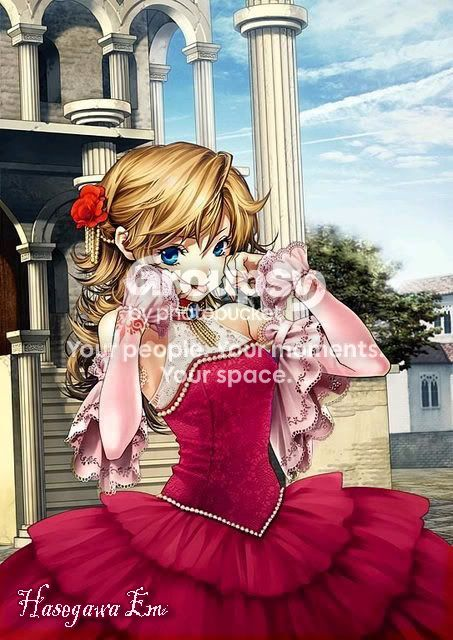

ชื่อ ซาวาทาริ เนเนโกะ
ชมรม ไสยศาสตร์ (เอาไว้แกล้งคุณ Sucutte :twisted: )
ชมรม ไสยศาสตร์ (เอาไว้แกล้งคุณ Sucutte :twisted: )
http://eco.froztic.in.th/archive/ecofanclub/
http://eco.froztic.in.th/archive/ecofanclub/viewtopic.php?f=21&t=39970
xiahjunsu เขียน:มาลงแล้ว
ชื่อ Rafaels Razillwa
1.ชมรม ปราบปี
2. ชมรม ดนตรี
3. ชมรม ศิลปะ การแสดง
ได้กี่ชมรมอ่าคับ ยังไงก็เรียงลำดับมาให้แล้วนะคับ
Sucette เขียน:อุ่ค... ท่านออฟใจร้ายยยยย
แกล้งเค้าได้ลงคอ...
[/me ทรุดฮวบ กัดผ้าเช็ดหน้า]
...แต่ดูๆไป คนที่ต้องหนักใจน่าจะเป็นประธานชมรมปราบผีมากกว่ามั้งนะ
(ที่จริงควรจะหนักใจตั้งแต่ลีเก้เข้าชมรมนี้แล้วล่ะ เอิ๊กกกก)
ปล. สาววายชมรมไสยศาสตร์ หนุ่มวายชมรมปราบผี... ไม่ได้นัดกันมาก่อนนะเนี้ย XD

Sucette เขียน:รูปเอมิแอบเข้ากับอิมเมจมากกก =[]="
เวลาผมแต่งฟิควาย ก็แต่งได้ไม่ดีบ่อยๆตรงฉากที่ไม่เรทฮะ!!
[/me หัวเราะหื่นๆ ก่อนโดนแรนคุงสอยปลิวออกนอกกระทู้]